Практичний досвід · журнал «ДентАрт» 2021 №1
Пародонтальне шинування поліетиленовою стрічкою Ribbond THM
PERIODONTAL SPLINTING WITH RIBBOND THM POLYETHYLENE RIBBON
Зуби зі скомпрометованим пародонтом через втрату зубоясенного прикріплення і кісткової тканини мають підвищену рухливість. У минулому були суперечки про те, чи слід шинувати зуби з ураженим пародонтом. Доведено, що при шинуванні рухливість зубів знижується.1,2 Після зняття шини рухливість зубів не змінюється. Донині неясна роль шинування зубів з ураженим пародонтом як частини початкового лікування пародонта.3,4
Тарнов і Флечер підсумували показання і протипоказання до шинування зубів з ураженим пародонтом.5 Вони зазначили, що в минулому стоматологи ухвалювали рішення про шинування зубів, ґрунтуючись на конкретних клінічних даних і суб'єктивних судженнях. Чи слід шинувати зуби за рентгенологічної втрати кісткової тканини або при ознаках рухливості зубів? Згідно зі стоматологічною літературою, існують три основні аргументи на користь контролю рухливості зубів за допомогою пародонтального шинування:
- первинна травматична оклюзія;
- вторинна травматична оклюзія;
- прогресуюча рухливість, міграція зубів і біль при функції.
Первинна травматична оклюзія – травма, що виникла в результаті надмірних оклюзійних сил, докладених до зуба чи зубів зі здоровим пародонтом. Вторинна травматична оклюзія – це травма, що виникла в результаті впливу фізіологічних оклюзійних сил на зуб чи зуби зі скомпрометованим пародонтом. Нині прийнято вважати, що клінічний прогноз зубів зі скомпрометованим пародонтом багато в чому залежить від наявності рухливості зуба.6,7
В останні роки було описано консервативне шинування таких зубів з використанням для армування безперервного тканого волокна, що й стало загальноприйнятою технікою.8-10 При накладанні шини рухливість зубів знижується. В адгезивній техніці застосовується армувальне волокно з композитом для стабілізації зубів, запобігання рухливості (при лікуванні після гострої травми); для запобігання зсуву зуба після втрати сусіднього і як заміну відсутніх зубів з використанням або адгезивного мостоподібного протеза, або мостоподібного протеза, виготовленого з природного зуба, як лікування вторинної оклюзійної травми для забезпечення функціональної стабільності; і для ортодонтичної ретенції.
Клінічна передбачуваність і успіх адгезивної техніки з використанням композиту доведені. Результатом успішного лікування виявилося збільшення кількості технік застосування композитів в адгезивній техніці для шинування зубів. Прагнучи поліпшити фізичні властивості композиту при шинуванні, лікарі вбудовували в композит дріт, штифти, нейлонову сітку або сітку з неіржавіючої сталі. Клінічні невдачі – поломки композиту, оголення армуючих матеріалів – були звичайним явищем, тому що ці матеріали не були хімічно інтегровані з композитом і не могли витримувати циклічного навантаження, докладеного до шини при фізіологічних навантаженнях і парафункції.
Намагаючись звести до мінімуму поломку шини, більшу частину композиту поміщали поверх занурених у композит дроту й сітки, що призводило до значного спотворення контурів реставрації. Це мало наслідком ретенцію їжі та зубного нальоту, що уcкладнювало підтримання гігієни ротової порожнини на ділянці шини. Із введенням хімічно інтегрованого армування з безперервних тканих волокон з композитом при шинуванні зубів були вирішені проблеми, пов'язані з минулими спробами армування композитних матеріалів. У більшості випадків ці ткані стрічки були виготовлені з високоміцного склеюваного біосумісного естетичного, зручного в роботі поліетилену нейтрального кольору.
Вибір волоконно-армуючого матеріалу для шинування зубів повинен ґрунтуватися на клінічних та фундаментальних наукових дослідженнях, що підтверджують необхідність його використання. Клінічно адгезія до структур зуба в поєднанні з адгезивним з'єднанням волоконного армування з композитом створюють міцне і стійке до пошкоджень покриття, забезпечують стабілізацію зубів, яка витримує суворі умови функціонування у ротовій порожнині.
Одна з проблем з раніше доступними волоконними армуючими матеріалами при введенні їх у композит полягала в тому, що вони мали велику товщину. Крім того, проблема, однозначно пов'язана з односпрямованими армуючими матеріалами зі скловолокна, полягає в нездатності точно адаптуватися до зубів при їх використанні з композитом.
Товщина і жорсткість цих волокон вимагають зайвих маніпуляцій з ними при спробі їх адаптації, що призводить до тріщин і дефектів всередині скловолокна, викликаючи їх передчасне руйнування, і зменшує ефект композитного армування. Щоб вирішити ці проблеми, була винайдена армована стрічка Ribbond THM (Ribbond, США) з крос-зшитих за допомогою закритого шва пасом більш тонкого волокна. Тонкість стрічки у поєднанні зі щільною ниткою дозволяє їй точно пристосовуватися й адаптуватися до зуба при використанні з композитом. Більш тонкий Ribbond, як і раніше, простий у застосуванні, як і оригінальна стрічка Ribbond з прямим стібком. На відміну від двоосьових плетених волокон, які після обрізування до потрібної довжини мають тенденцію розплутуватися і не зберігають свою форму, Ribbond не розпускається і зберігає постійні розміри при використанні з композитними матеріалами.
Іншою особливістю Ribbond є щільне плетіння, яке дозволяє стрічці зберігати структурну цілісність, яка передає посилення композиту в різних напрямках і діє як стопер для тріщин.11,12 При зміні діаметра поліетиленових ниток з 215 ден на нитку 100 ден, тоншу на 50%, стрічка тієї ж ширини має більш ніж удвічі більшу об'ємну частку ниток. Завдяки цій збільшеній об'ємній частці міцність на згинання композиту зростає у 2,5 раза у порівнянні з композитом без армування і на 15% більше у порівнянні зі звичайною стрічкою Ribbond.13 Нитка меншого діаметра призводить до зменшення товщини стрічки, ділянки плетіння закритого стібка мають односпрямовану орієнтацію, а також збільшену міцність на згинання. За такої ж ширини волокна Ribbond THM майже на 50% тонші.13,14 Це означає, що при шинуванні на передній ділянці немає потреби у підготовці борозни для шини, і вона матиме значно менший об'єм.14 Крім того, маніпуляції з Ribbond THM набагато легші через те, що вона тонка.
Композитне шинування з використанням стрічки Ribbond THM у техніці прямої реставрації
Клінічний випадок
Пацієнт звернувся з основною скаргою на дискомфорт під час жування у передній ділянці нижньої щелепи (фото 1). Рентгенологічно різці нижньої щелепи мають втрату кісткової тканини більш ніж на 50% (фото 2) з рухливістю «2» за індексом Міллера. Пацієнта направили до пародонтолога для шинування, поскільки у пацієнта була діагностована вторинна травматична оклюзія різців нижньої щелепи. Після консультації з пародонтологом вирішено використати композитну шину, армовану волоконною стрічкою, у прямій техніці від ікла до ікла. Пацієнт також не витримував тривалих відвідин стоматолога. Перевага такого шинування в тому, що для цієї процедури потрібен лише один візит.
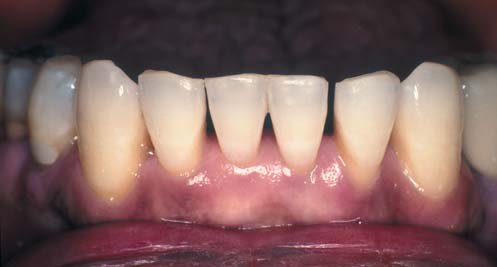
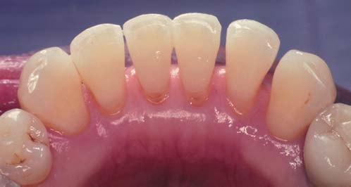
Для виготовлення шини зуби були ізольовані за допомогою рабердаму. Окрім забезпечення високого ступеня ізоляції, рабердам для пацієнтів з оголеними коренями зубів та гіперестезією діє як бар'єр для повітря, води і бризок повітря/вода під час процедури шинування, тому немає потреби в застосуванні місцевої анестезії. Зуби очистили пастою без фтору з вестибулярної і язичної поверхонь з використанням профілактичної чашечки, ретельно промили і висушили. Інтерпроксимальні поверхні зубів були очищені і оброблені алмазною смужкою середньої зернистості. Щоб мінімізувати об'єм шини в естетично значущій зоні (міжзубні ділянки вестибулярно), використали тонкий фінішний алмазний бор із заокругленим кінчиком (фото 3). Поскільки волоконна стрічка Ribbond THM тонка, не було потреби у створенні борозни з лінгвальної поверхні. У цього пацієнта не було чутливості зубів, але пацієнтам з гіперестезією кореня може знадобитися двобічна ментальна анестезія.
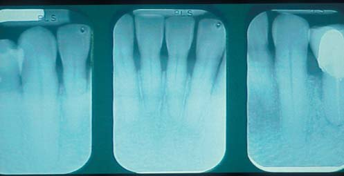
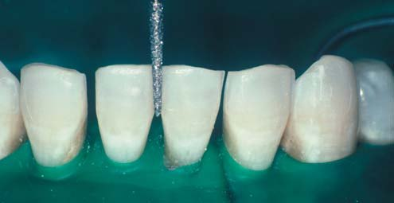
Було вирішено, що шина проходитиме від лівого ікла нижньої щелепи до правого ікла нижньої щелепи. Оскільки армування композитом важливе у міжзубних ділянках, шина повинна розташовуватися від мезіальної половини коронки кожного ікла з язичної поверхні. Відрізок зубної нитки накладали з язичної поверхні на рівні проксимальних контактів і відрізали до потрібної довжини. Остаточна довжина стрічки Ribbond THM шириною 3 мм дорівнювала довжині шаблона із зубної нитки (фото 4). Поліетиленова стрічка дуже міцна. Для розрізання волоконної стрічки виробник постачає в комплекті ножиці зі спеціальними ріжучими лезами. Крім того, доки оброблені плазмою волокна не змочуються адгезивом, вони схильні до поверхневого забруднення. Тому при роботі з Ribbond перед нанесенням адгезиву необхідно використати чистий пінцет. Поліетиленові волокна, оброблені плазмою, мають необмежений термін придатності.
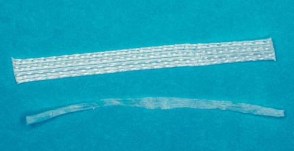
Відрізаний шматок Ribbond THM був просякнутий адгезивом 4-го покоління (фото 5). Після змочування біла непрозора стрічка набуває естетичної прозорості. Потім стрічку промокнули серветкою, щоб видалити надлишки адгезиву. Стрічку слід лише злегка змочити адгезивом. Її відклали вбік і накрили, щоб на неї не потрапляло світло, доки вона не покрита композитом, нанесеним на зуби.
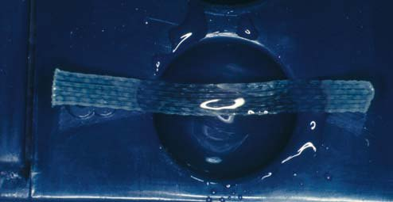
Зуби протравлювали протягом 30 с за допомогою гелю 32% фосфорної кислоти, при цьому протравлювання відбувалося між усіма зубами, що підлягають шинуванню, і на вестибулярній поверхні (фото 6). Потім зуби ополіскували струменем повітря/вода протягом 10 с і висушили. На дистальних поверхнях іклів нижньої щелепи були розміщені інтерпроксимально матриці для забезпечення сепарації зубів.
Раніше для мінімізації надлишку композиту в зоні ясенних амбразур встановлювали клини. Але з клинами завжди є ймовірність того, що дуже рухливі зуби можуть бути зафіксовані зі зміщенням. Нещодавно був описаний інноваційний метод мінімізації надлишків композиту в цих зонах.23 Методика полягає у внесенні швидкотверднучого полісилоксанового відтискного матеріалу середньої в'язкості за допомогою відтискного шприца в зону ясенних амбразур. Важливо, щоб відтискний матеріал вносився після протравлювання, промивання та висушування зубів, щоб уникнути скупчення вологи, яке може статися, якщо внесення буде зроблено раніше (фото 7). Таке використання еластомірного відтискного матеріалу забезпечує пасивне блокування міжзубних проміжків. Адгезив нанесли на протравлену емалеву поверхню, на міжзубні поверхні і вестибулярно за допомогою одноразового пензлика. Не полімеризуйте адгезив, доки не буде нанесено композит. Якщо в реставрацію входить дентин або цемент зуба, ці ділянки слід обробити відповідним праймером для дентину з використовуваного адгезиву. Хоча для цієї техніки також можна використовувати однокомпонентні адгезиви, у більшості випадків препарування і реставрація провадяться в межах емалі і потреби у праймері немає.
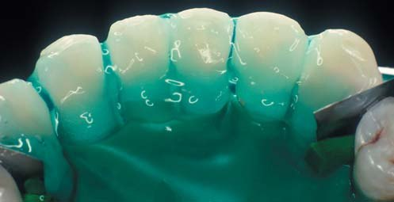
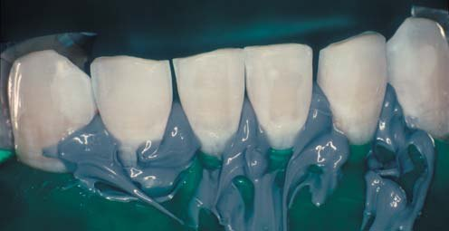
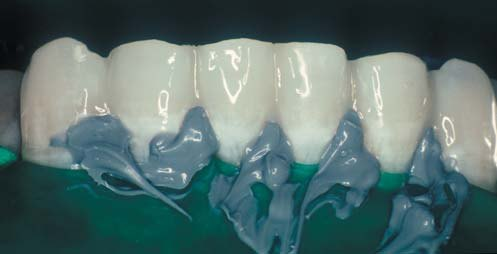
На вестибулярні поверхні всіх інтерпроксимальних поверхонь зубів, що підлягають шинуванню, було нанесено гібридний композит середньої в'язкості в компулах (Prisma TPH, Dentsply/Caulk). Вестибулярні поверхні змодельовані і полімеризовані протягом 20 с (фото 8). Покриття композитом вестибулярної поверхні кожного зуба на 180° зроблене з метою захистити міжзубні поверхні від рецидивуючого карієсу і стабілізувати зуби, щоб запобігти зсуву, коли композит і стрічка поміщаються з язичної поверхні. Заведений на вестибулярну поверхню композит забезпечить шинування у поперечному напрямку для кожного зуба і запобігатиме зсуву зубів і поломці остаточної шини. Цей крок важливий, тому що після накладання шини міжзубні поверхні сусідніх зубів не зможуть очищатися належним чином.
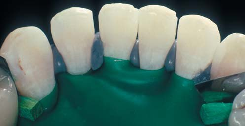
Потім композит нанесли з лінгвальної поверхні. Якщо помістити кінчик капсули текучого композиту під прямим кутом до язичної поверхні, він буде легко стікати по цій поверхні (фото 9). Ribbond THM шириною 3 мм помістили в композит, починаючи із серединної поверхні кожного ікла, поступово проштовхуючи стрічку в композит. Для адаптації та занурення стрічки в композит використовували пінцет і штопфер (фото 10). Дуже важливо, що при адаптації стрічки її волокна проштовхували в міжзубні ділянки на контактах для досягнення точної адаптації. Ця адаптація забезпечує тривалий термін служби шини.
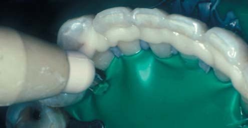
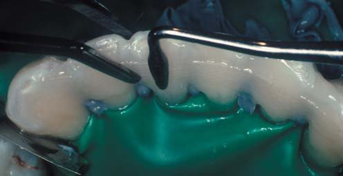
Коли стрічку проштовхували в композит, невеликий надлишок композиту виходив за межі стрічки. Це було згладжено, і перед полімеризацією видалено надлишки на лінгвальній поверхні. Потім провадили полімеризацію з лінгвальної поверхні протягом 60 с для кожного зуба. У цей час стрічку буде видно і вона не буде покрита композитом достатньої товщини. Через це використали високоміцний зносостійкий текучий композит, щоб згладити нерівності з язичної поверхні і забезпечити рівномірну товщину композиту, що покриває стрічку (фото 11). Текучий композит з лінгвальної поверхні полімеризували протягом додаткових 20 с для кожного зуба. Ізоляція, створена полісилоксановим відтискним матеріалом, видалена з ясенних амбразур (фото 12). Завдяки цій техніці блокауту потрібно було дуже мало часу для обробки шини.
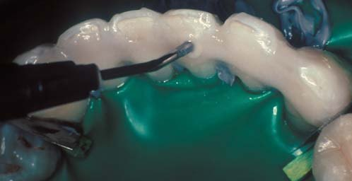
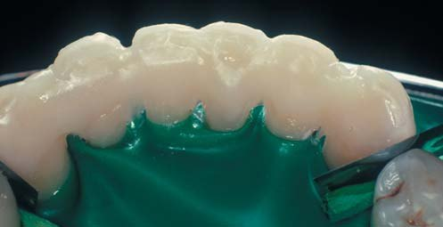
Якщо композитові після видалення рабердаму потрібна подальша обробка, це можна зробити фінішними чи алмазними борами. Лінгвальні поверхні відполіровані абразивними головками з оксиду алюмінію (Enhance, Caulk/Dentsply). Якщо в ясенних амбразурах є надлишки композиту, для обробки цих ділянок можна використати реципрокний наконечник Profin (Dentatus) з плоскою головкою Lamineer для фінішної обробки. Причина використання Profin полягала в тому, що доступ до країв ясен на апроксимальних поверхнях обмежений, коли зуби шиновані.
Фінішні штрипси не підходять для заокруглених або увігнутих кореневих і міжзубних поверхонь. Аналогічним чином головки для фінішної обробки і бори, що обертаються, які часто використовують у цих міжзубних зонах, протипоказані, оскільки вони можуть створювати неприродні амбразури і нерівні поверхні із зазублинами. Profin реципрокним рухом може використовуватися для видалення надлишків композиту і надання гінгіво-апроксимальним поверхням природної форми (фото 13).
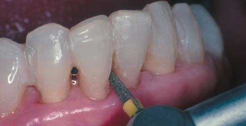
Система Lamineer містить багато полірувальних головок із різною абразивністю (розмір зерен від 150 до 15 мікрон), щоб залишити гладеньку поверхню і забезпечити дзеркальний блиск. Фінішне полірування і доступ до важкодоступних ділянок для полірування досягається за допомогою полірувальної пасти для композиту, що розподіляється з використанням порожнистих пластикових полірувальних головок Lamineer або V-подібних головок, що деформуються. Наконечники V-подібної форми розширюються і повторюють форму міжзубних проміжків. Остаточне полірування робилося за допомогою полірувальної пасти для композиту.
Завершальним етапом було корегування оклюзії та естетичного вигляду шини. Готова шина забезпечила стабілізацію зуба, поліпшила функцію без збільшення об'єму конструкції і задовольнила естетичні потреби пацієнта (фото 14). Рентгенограми виготовленої шини підтверджують шинування різців з ураженим пародонтом (фото 15).

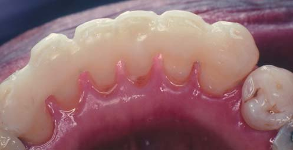
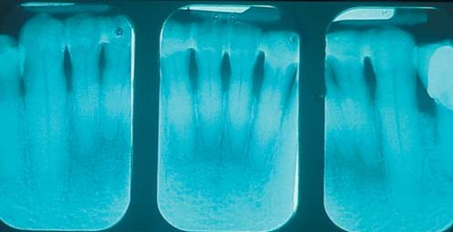
Обговорення
Рухливість зубів була описана як важливий клінічний прогностичний параметр.6,7 З цієї причини і для комфорту пацієнта шинування рекомендоване як терапія для стабілізації зубів. З появою армуючих стрічок з поліетилену було вирішено багато проблем, пов'язаних зі старими типами армування.8-11,16,17
Самадзаде і його колеги зазначили, що при армуванні композиту з використанням Ribbond у разі виникнення тріщини в армованому композиті вона не поширилася за межі поліетиленового волокна і проміжна частина залишилася непошкодженою.12 Карбхарі і Долгопольський описали явище зростання тріщини від утоми в короткволокнистих композитах із зоною трансформованого (пошкодженого) матеріалу. Пошкоджена зона споживає енергію і контролює втомну міцність руйнування та швидкість формування тріщин. Це пояснює міцність на руйнування композиту, армованого стрічковим волокном.24
У ході довготермінових клінічних спостережень за шинуванням з використанням оригінальної армуючої стрічки Ribbond виявлено, що протягом 42-96 місяців (у середньому 68,6 міс.) композитні реставрації, армовані волокном, були дуже успішні.14 Оцінювалися випадки, в яких проводилося пародонтальне шинування, виготовлялися адгезивні мостоподібні протези, адгезивні мостоподібні протези з використанням природних зубів як проміжної частини, ортодонтичні ретейнери. З 11 спостережуваних пацієнтів у жодного не було виявлено дебондингу чи рецидиву карієсу. У тих випадках, коли провадилося лише шинування зубів чи ортодонтична ретенція, жодна з пародонтальних шин і жоден з ортодонтичних ретейнерів не зламалися.
Висновки
У статті описано інноваційну техніку з використанням тонкої адгезивної стрічки для армування композиту. Комбінуючи хімічні адгезивні властивості та естетичні характеристики композиту з підвищенням міцності при армуванні стрічкою з плазмовою обробкою, з високим модулем пружності, стоматологи можуть надати пацієнтам реставрації і шини, які протистоятимуть екстремальному оклюзійному і жувальному навантаженню. Ці стійкі до руйнування реставрації довговічніші, ніж більшість матеріалів, що використовувалися раніше.
Література
- Laudenbach KW, Stoller N, Laster L. The effects of periodontal surgery on horizontal tooth mobility. J Dent Res (Special Issue), 56: abstract no. 596, 1977.
- Scharer P. Die stegkonstruktion als vesteigungemittel im vestgebiss. Thesis, University of Zurich, Switzerland, 1961.
- Muhlemann HR, Sardir S, Reteitschak KH. Tooth mobility: its causes and significance. J Periodont, 36:148-153, 1965.
- Renggli HH, Schweizer H. Splinting of teeth with removable bridges-biological effects. J Clin Periodont, 1:43-46, 1974.
- Tarnow DP, Fletcher P. Splinting of periodontally involved teeth: indications and contraindications. New York State Dental Journal, 52(5):24-27, 1986.
- Wheeler TT, McArthur WP, Magnusson I, et al. Modeling the relationship between clinical, microbiologic, and immunologic parameters and alveolar bone levels in an elderly population. J Periodontol 65:68-78, 1994.
- McGuire MK and Nunn ME. Prognosis versus actual outcome. II. The effectiveness of clinical parameters in developing an accurate prognosis. J Periodontol 67:666-674, 1996.
- Strassler HE, Serio FG. Stabilization of the natural dentition in periodontal cases using adhesive restorative materials. Periodontal Insights 4(3):4-10, 1997.
- Strassler HE. New generation bonded reinforcing materials for anterior periodontal tooth stabilization and splinting. Dent Clin North Am 43(1):105-126, 1999.
- Strassler HE, Scherer W, LoPresti J, Rudo D. Long term clinical evaluation of a woven polyethylene ribbon used for tooth stabilization and splinting. Journal of the Israel Orthodontic Society 1997; 5(3):11-15.
- Rudo DN, Karbhari VM. Physical behaviors of fiber reinforcement as applied to tooth stabilization. Dent Clin North Am 43(1):7-35, 1999.
- Samadzadeh A, Kugel G, Hurley E, Aboushala A. Fracture strengths of provisional restorations reinforced with plasma-treated woven polyethylene fiber. J Prosthet Dent 78:447-451, 1997.
- Strassler HE, Karbhari V, Rudo D. Effect of fiber reinforcement on flexural strength of composite. J Dent Res (Special Issue) 80:221 abstract no. 854, 2001.
- Karbhari VM, Rudo DN, Strassler HE. The development and clinical use of leno woven UHMWPE ribbon in dentistry. Proceedings of the Society for Biomaterials 29 (Abstract issue) abstract no. 529, 2003.
- Karbhari VM, Strassler H. Effect of fiber architecture on flexural characteristics and fracture of fiber-reinforced composites. Dent Mater. 2006 epub Nov 7, 2006 in Press.
- Strassler HE, Tomona N, Spitznagel JK Jr. Stabilizing periodontally compromised teeth with fiber-reinforced composite resin. Dent Today. 22(9): 102-9, 2003.
- Strassler HE, Brown C. Periodontal splinting with a thin high-modulus polyethylene ribbon. Compend Contin Educ Dent. 22:696-704, 2001.
- Strassler HE, Serio CL. Single-visit natural tooth pontic fixed partial denture with fiber reinforcement. Compend Contin Educ Dent. 25:224-30, 2004.
- Unlu N, Belli S. Three-year clinical evaluation of fiber-reinforced composite fixed partial dentures suing prefabricated pontics. J Adhes Dent. 8:183-8, 2006.
- Newman MP, Yaman P, Dennison J, Rafter M, Billy E. Fracture resistance of endodontically treated teeth restored with composite posts. J Prosthet Dent, 89: 360-367, 2003.
- Belli S, Erdemir A, Yildrirm C. Reinforcement effect of polyethylene fibre in root-filled teeth: comparison of two restoration techniques. Int Endod J. 39:136-42, 2006.
- Belli S, Cobankara FK, Eraslan O, Eskitascioglu G, Karbhari V. The effect of fiber insertion of fracture resistance of endodontically treated molars with MOD cavity and reattached fractured lingual cusps. J Biomed Mater Res B Appl Biomater 79:35-41, 2006.
- Hughes TE, Strassler HE. Minimizing excessive composite resin when fabricating fiber-reinforced splints. JADA 131:977-979, 2000.
- Karbhari VM, Dolgopolsky A. Transitions between micro-brittle and micro-ductile material behaviour during FCP in short fibre reinforced composites. Int J Fatigue 12:51-61, 1990.